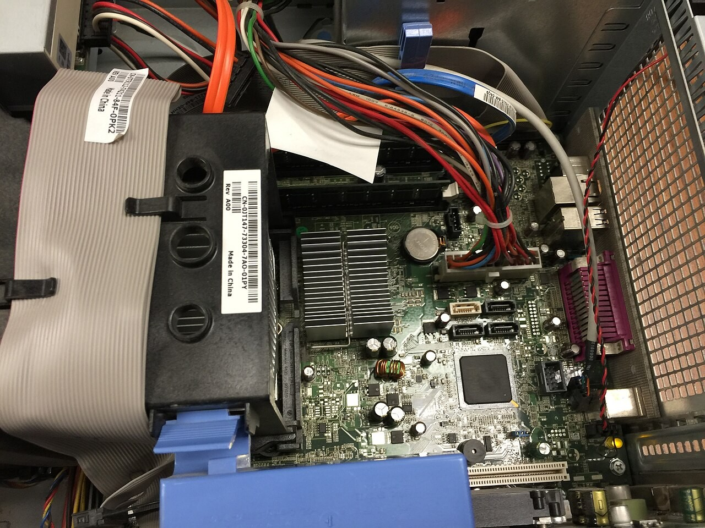
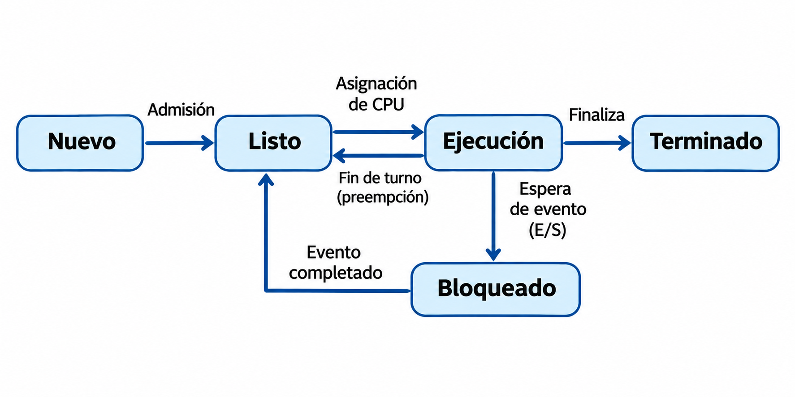
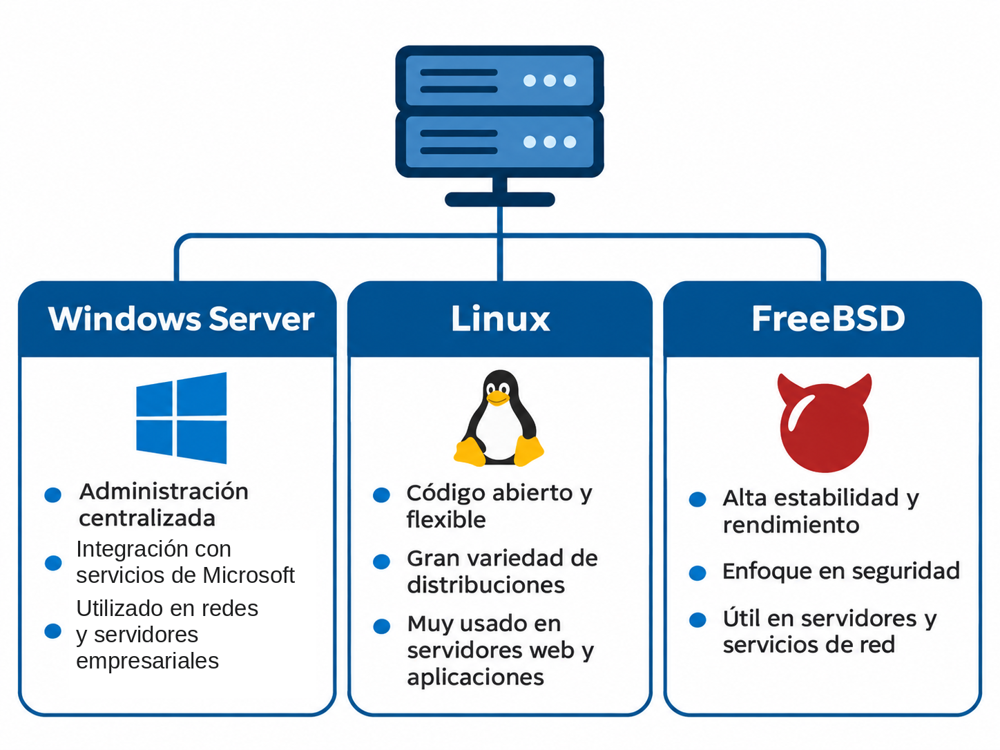

En esta página web se presentan los principales
temas estudiados durante el curso de Sistemas
Operativos. Su objetivo es explicar de manera
sencilla cómo han evolucionado estos sistemas
y la importancia que tienen para el funcionamiento
de las computadoras.
Entre los temas desarrollados se encuentran
el hardware y software, la administración
de procesos y memoria, los hilos, el algoritmo
del banquero y los sistemas operativos
utilizados en servidores. También se incluyen
ejemplos y tablas comparativas que ayudan
a comprender mejor los conocimientos
adquiridos durante el curso.
Los sistemas operativos son fundamentales porque
permiten que los usuarios utilicen los recursos
de una computadora de manera organizada.
Gracias a ellos, es posible ejecutar programas,
administrar archivos y utilizar diferentes
dispositivos. Por esta razón, conocer su
funcionamiento es importante para comprender
mejor la tecnología que utilizamos diariamente.
Finalmente, esta página incluye actividades
interactivas y un cuestionario para reforzar
el aprendizaje. Con estas herramientas se
busca que el visitante no solamente lea
la información, sino que también explore
los contenidos y compruebe lo que ha aprendido.
La tecnología comenzó mucho antes de que
existieran las computadoras. Los primeros
seres humanos utilizaban materiales de la
naturaleza para fabricar herramientas que
facilitaban sus actividades diarias.
Según el Smithsonian Institution (s. f.),
hace al menos 2.6 millones de años ya se
fabricaban herramientas de piedra que
servían para cortar y trabajar materiales.
Primeros avances tecnológicos
Herramientas de piedra:
Se utilizaban para cortar y realizar
diferentes trabajos.
Herramientas más elaboradas:
Con el tiempo se comenzaron a fabricar
instrumentos mejor trabajados,
como las hachas de mano.
Mejoramiento de técnicas:
Los seres humanos fueron aprendiendo
nuevas formas de fabricar y utilizar
sus herramientas.
Importancia de estos avances
Estos primeros inventos fueron importantes
porque ayudaron a las personas a realizar
sus actividades de una manera más sencilla.
Con el paso del tiempo, la tecnología siguió
evolucionando hasta llegar a las herramientas
y equipos que utilizamos actualmente.
Breve historia de los sistemas operativos
¿Cómo surgieron los sistemas operativos?
En los primeros años de la computación,
las computadoras necesitaban mucha
intervención humana para ejecutar los
programas. Los operadores debían preparar
las instrucciones y controlar los trabajos
de forma manual.
Durante la década de 1950 comenzaron
a desarrollarse sistemas de procesamiento
por lotes. Estos permitían organizar varios
trabajos para ejecutarlos uno después de
otro, aprovechando mejor el tiempo de las
computadoras (Computer History Museum, s. f.).
Figura 1
Computadora ENIAC
Nota. Fotografía de 1946,
realizada por un fotógrafo no identificado
del Ejército de Estados Unidos.
Fuente: Wikimedia Commons.
Dominio público.
Evolución de los sistemas operativos
Los sistemas operativos han evolucionado con el tiempo para facilitar
el uso de las computadoras, mejorar el aprovechamiento de los recursos
y permitir que varios usuarios y programas trabajen de forma eficiente.
Figura 2
Diagrama interactivo de la evolución de los sistemas operativos
1
Primeras computadoras sin sistema operativo
Inicio de la computación
En las primeras computadoras no existía un sistema operativo.
Los programas se ejecutaban con intervención directa de los
operadores, quienes debían controlar manualmente cada tarea.
2
Sistemas de procesamiento por lotes
Automatización inicial
Después surgieron los sistemas por lotes, que permitían organizar
varios trabajos para ejecutarlos uno tras otro. Esto redujo la
intervención manual y mejoró el uso del tiempo de la computadora.
3
Multiprogramación y tiempo compartido
Mayor aprovechamiento del procesador
La multiprogramación permitió mantener varios programas en memoria
al mismo tiempo, mientras que el tiempo compartido facilitó que
varios usuarios utilizaran una misma computadora de forma interactiva.
4
Sistemas operativos modernos
Interfaces, seguridad y multitarea
Los sistemas operativos modernos administran procesos, memoria,
archivos y dispositivos. Además, permiten ejecutar aplicaciones,
usar interfaces gráficas y proteger la información del usuario.
Nota. Elaboración propia basada en IBM (s. f.) y Microsoft (2026).
Gracias a esta evolución, las computadoras actuales pueden realizar múltiples
tareas de manera más rápida, organizada y eficiente.
Hardware y software de la computadora
¿Qué es el hardware?
El hardware está formado por las partes físicas
de una computadora, como el procesador, la
memoria RAM, el teclado y el monitor.
Estos componentes permiten procesar datos
y realizar diferentes tareas
(TechTarget Contributor, 2024).
¿Qué es el software?
El software comprende los programas y las
instrucciones que permiten utilizar una
computadora. Algunos ejemplos son los
sistemas operativos, los navegadores web
y los procesadores de texto
(TechTarget Contributor, 2024).
Diferencias entre hardware y software
Tabla 1
Comparación entre hardware y software
Característica
Hardware
Software
Definición
Partes físicas
Programas e instrucciones
Ejemplos
Teclado, monitor y memoria RAM
Windows, Linux y navegadores
Función
Ejecutar operaciones físicas
Controlar y dirigir operaciones
Nota. Elaboración propia basada
en TechTarget Contributor (2024).
Figura 3
Tarjeta madre de una computadora

Nota. Fotografía de los componentes
internos de una computadora.
Fuente: Wikimedia Commons.
Ecosistema del Sistema Operativo
¿Qué es el ecosistema de un sistema operativo?
El ecosistema de un sistema operativo comprende
los elementos que trabajan en conjunto para
permitir el funcionamiento de una computadora.
Incluye el hardware, los programas, los
controladores y las herramientas del sistema.
El sistema operativo facilita la comunicación
entre las aplicaciones y los recursos físicos
del equipo (Red Hat, 2026).
Elementos que forman el ecosistema
Hardware:
Incluye el procesador, la memoria
y los dispositivos físicos.
Sistema operativo:
Administra los recursos de la computadora.
Controladores:
Permiten la comunicación con los dispositivos.
Aplicaciones:
Son programas que realizan tareas
para el usuario.
Usuarios e interfaces:
Permiten interactuar con la computadora
mediante menús, ventanas o comandos.
Estos elementos trabajan de manera relacionada
para facilitar el uso de la computadora
(Red Hat, 2026).
Importancia del ecosistema
El ecosistema es importante porque facilita
la comunicación entre los programas y el
hardware. Además, permite que los usuarios
realicen sus actividades utilizando las
herramientas y los recursos disponibles
en el sistema (Red Hat, 2026).
Ejemplo práctico
Cuando abrimos un navegador para buscar
información, utilizamos varios elementos
del ecosistema. El sistema operativo
administra los recursos de la computadora,
los controladores permiten utilizar los
dispositivos y el navegador muestra
la información al usuario.
Componentes del Sistema Operativo
¿Cuáles son sus componentes principales?
Un sistema operativo está formado por
diferentes componentes que permiten
administrar los recursos de la computadora.
Entre sus funciones principales están
controlar los procesos, utilizar la memoria,
organizar archivos, gestionar dispositivos
y proteger la información (Microsoft, 2026).
Gestión de procesos
La gestión de procesos permite organizar
la ejecución de los programas y distribuir
el tiempo del procesador entre las tareas.
Esto ayuda a que varias aplicaciones
funcionen en una misma computadora
(Microsoft, 2026).
Gestión de memoria
La gestión de memoria administra el espacio
que necesitan los programas para funcionar.
El sistema operativo distribuye los recursos
de memoria disponibles según las necesidades
de las aplicaciones (Microsoft, 2026).
Sistema de archivos
El sistema de archivos permite organizar,
guardar y localizar la información dentro
de una computadora. Gracias a esta función,
los usuarios pueden crear carpetas,
almacenar documentos y acceder a sus
archivos cuando los necesiten
(Microsoft, 2026).
Gestión de dispositivos
La gestión de dispositivos permite que el
sistema operativo controle los componentes
conectados a la computadora, como el teclado,
el mouse, las impresoras y las unidades
de almacenamiento. Esto facilita su
funcionamiento y comunicación con los
programas (Microsoft, 2026).
Seguridad y protección
La seguridad del sistema operativo ayuda
a proteger la información y los recursos
de la computadora. Incluye mecanismos
como contraseñas, permisos de acceso
y actualizaciones de seguridad para
reducir los riesgos informáticos
(Microsoft, 2026).
Ejemplo práctico
Cuando abrimos un documento y lo guardamos,
intervienen varios componentes del sistema
operativo. La gestión de procesos permite
ejecutar el programa, la memoria mantiene
los datos que se están utilizando y el
sistema de archivos permite guardar el
documento en la computadora.
Algoritmo del banquero
¿Qué es el algoritmo del banquero?
El algoritmo del banquero es un método
que permite administrar la asignación
de recursos entre varios procesos.
Su objetivo es evitar situaciones de
interbloqueo, comprobando si los recursos
pueden asignarse sin poner en riesgo
la ejecución de los demás procesos
(GeeksforGeeks, 2026).
¿Cómo funciona?
El algoritmo del banquero analiza los recursos
disponibles y los que necesita cada proceso.
Antes de autorizar una nueva asignación,
comprueba si el sistema puede permanecer
en un estado seguro, donde todos los procesos
tengan la posibilidad de finalizar.
Si la asignación no es segura, el proceso
debe esperar (GeeksforGeeks, 2026).
Ejemplo práctico
Supongamos que una computadora tiene
10 unidades de un recurso.
Actualmente hay 3 unidades disponibles.
Tabla 2
Asignación de recursos a tres procesos
Proceso
Asignado
Máximo
Necesita
P1
3
5
2
P2
2
4
2
P3
2
6
4
Nota. Ejemplo de elaboración propia
basado en el procedimiento del algoritmo
del banquero (GeeksforGeeks, 2026).
La columna Necesita se obtiene restando
los recursos asignados al máximo que
puede solicitar cada proceso.
Por ejemplo, P1 necesita 5 - 3 = 2 recursos.
Verificación de la secuencia segura
Inicialmente hay 3 recursos disponibles.
Los procesos pueden finalizar en el siguiente
orden:
P1 necesita 2 recursos. Puede finalizar
y devolver sus 3 recursos asignados.
Quedan 6 disponibles.
P2 necesita 2 recursos. Puede finalizar
y devolver sus 2 recursos asignados.
Quedan 8 disponibles.
P3 necesita 4 recursos. Puede finalizar
y devolver sus 2 recursos asignados.
Quedan 10 disponibles.
Conclusión:
El sistema está en un estado seguro porque
todos los procesos pueden terminar siguiendo
la secuencia P1, P2 y P3.
Hilos
¿Qué es un hilo?
Un hilo es una unidad de ejecución que
forma parte de un proceso. Un programa
puede utilizar varios hilos para realizar
diferentes tareas, compartiendo recursos
del mismo proceso (Microsoft, 2025).
¿Cómo funcionan los hilos?
Los hilos permiten que un proceso realice
diferentes tareas durante su ejecución.
El sistema operativo distribuye el tiempo
del procesador entre los hilos, mientras
estos comparten recursos del mismo proceso.
Esto ayuda a organizar mejor las actividades
de un programa (Microsoft, 2025).
Ejemplo de hilos
Un ejemplo del uso de hilos es un programa
reproductor de música. Este puede utilizar
diferentes hilos para organizar sus tareas.
Hilo 1:
Reproduce el audio de la canción.
Hilo 2:
Atiende los botones de reproducción
y pausa.
Hilo 3:
Actualiza la barra de progreso
de la canción.
Conclusión:
Los hilos permiten organizar diferentes
tareas dentro de un mismo proceso,
compartiendo sus recursos.
Procesos
¿Qué es un proceso?
Un proceso es un programa que se encuentra
en ejecución dentro de una computadora.
El sistema operativo le asigna recursos
como memoria y tiempo de procesamiento
para que pueda realizar sus tareas.
Cada proceso contiene al menos un hilo
de ejecución (Microsoft, 2025).
Estados de un proceso
Durante su funcionamiento, un proceso
puede pasar por diferentes estados
según la actividad que esté realizando
(Rajam, s. f.).
Nuevo:
El proceso se está creando.
Listo:
El proceso espera su turno
para utilizar el procesador.
Ejecución:
El proceso está utilizando
el procesador.
Bloqueado:
El proceso espera un evento
o recurso para continuar.
Terminado:
El proceso ha finalizado
su ejecución.
Figura 4
Diagrama de los estados de un proceso

Nota. Diagrama elaboracion propia
Diferencia entre proceso e hilo
Un proceso es un programa en ejecución
que utiliza recursos del sistema.
Un hilo es una unidad de ejecución
que trabaja dentro de un proceso.
Varios hilos de un mismo proceso
pueden compartir memoria y recursos
(Microsoft, 2025).
Tabla 3
Comparación entre proceso e hilo
Característica
Proceso
Hilo
Definición
Programa en ejecución
Unidad de ejecución de un proceso
Memoria
Tiene su propio espacio de memoria
Comparte memoria con otros hilos del proceso
Recursos
Utiliza recursos asignados por el sistema
Comparte recursos de su proceso
Nota. Elaboración propia
basada en Microsoft (2025).
Ejemplo de un proceso
Un ejemplo de un proceso es cuando
abrimos el Bloc de notas de Windows.
El sistema operativo crea un proceso
para ejecutar el programa y le asigna
los recursos necesarios.
Nuevo:
El usuario abre el Bloc de notas.
Listo:
El proceso espera su turno
para utilizar el procesador.
Ejecución:
El programa ejecuta sus instrucciones.
Bloqueado:
El proceso puede esperar
una operación de entrada o salida.
Terminado:
El proceso finaliza cuando
se cierra el programa.
Conclusión:
Un proceso utiliza recursos del sistema
operativo para ejecutar un programa
y realizar diferentes actividades.
Comentario personal sobre los sistemas operativos
¿Qué aprendí durante el curso?
Durante este curso aprendí que los
sistemas operativos son importantes
porque permiten que una computadora
funcione correctamente. Antes conocía
algunas de sus funciones, pero ahora
comprendo mejor cómo administran
los procesos, la memoria y los
diferentes dispositivos.
Mi opinión personal
Considero que conocer el funcionamiento
de los sistemas operativos es importante
para mi formación en Ingeniería en
Sistemas. Los temas estudiados me
ayudaron a comprender mejor cómo
trabaja una computadora y la importancia
de administrar correctamente sus recursos.
Servidores
¿Qué es un servidor?
Un servidor es una computadora o sistema
que proporciona información, recursos y
servicios a otros dispositivos conectados
a una red. Estos dispositivos se conocen
como clientes (Cloudflare, s. f.).
Ejemplo práctico
Cuando ingresamos a una página web desde
nuestro teléfono o computadora, el navegador
solicita información a un servidor.
El servidor recibe la solicitud y envía
los datos necesarios para mostrar la página.
Partes físicas de un servidor
Los servidores cuentan con componentes
físicos que permiten procesar, almacenar
y transmitir información.
CPU o procesador:
Ejecuta instrucciones y procesa solicitudes.
Memoria RAM:
Mantiene temporalmente los datos
que se están utilizando.
Almacenamiento:
Utiliza discos HDD o SSD para
guardar datos y programas.
Tarjeta de red:
Permite conectar el servidor a una red.
Placa madre:
Conecta los componentes y permite
la comunicación entre ellos.
Fuente de poder y ventilación:
Proporcionan energía y ayudan a
mantener una temperatura adecuada.
Partes lógicas de un servidor
Las partes lógicas son los programas y
configuraciones que permiten administrar
un servidor y ofrecer diferentes servicios
a los usuarios.
Sistema operativo:
Administra los recursos del servidor.
Algunos ejemplos son Windows Server y Linux.
Aplicaciones y servicios:
Son programas que permiten ofrecer
servicios como páginas web, correo
electrónico y archivos.
Usuarios y permisos:
Controlan quién puede ingresar al
servidor y qué recursos puede utilizar.
Protocolos y configuración:
Establecen las reglas de comunicación
de la red, como TCP/IP, HTTP y DNS.
Funciones principales de un servidor
Los servidores realizan diferentes funciones
que permiten compartir información y ofrecer
servicios a los usuarios de una red.
Compartir recursos:
Permite utilizar archivos, impresoras
y aplicaciones compartidas.
Almacenar información:
Guarda datos de manera organizada.
Administrar usuarios:
Gestiona las cuentas y los permisos
de acceso.
Procesar solicitudes:
Atiende las peticiones de los usuarios
y devuelve los resultados.
Facilitar la comunicación:
Permite utilizar servicios de correo
y comunicación entre equipos.
Proteger y respaldar:
Ayuda a mantener segura la información
y realizar copias de respaldo.
Tipos de servidores
Los servidores se clasifican según
el servicio que proporcionan a los
usuarios de una red.
Servidor web:
Aloja y entrega páginas web.
Servidor de archivos:
Almacena y comparte documentos y carpetas.
Servidor de base de datos:
Almacena y permite consultar datos organizados.
Servidor de correo:
Gestiona el envío y recepción de correos.
Servidor de aplicaciones:
Ejecuta aplicaciones para los usuarios.
Servidor DNS:
Traduce nombres de dominio a direcciones IP.
Servidor DHCP:
Asigna automáticamente direcciones IP
y otros parámetros de red.
Servidor proxy:
Intermedia solicitudes entre clientes
y otros servidores.
Ejemplos de servidores en la vida diaria
Los servidores están presentes en muchos
servicios que utilizamos diariamente.
Algunos ejemplos son:
Universidad:
Las plataformas virtuales permiten
consultar notas, materiales y tareas.
Empresa:
Los servidores permiten compartir
documentos y recursos entre empleados.
Comercio electrónico:
Los servidores permiten mostrar
productos, registrar pedidos y
administrar información de clientes.
Un mismo sistema puede utilizar varios
servidores que trabajan juntos para
ofrecer diferentes servicios.
Comparación de sistemas operativos para servidores
¿Qué es un sistema operativo para servidores?
Un sistema operativo para servidores es
un software diseñado para administrar
los recursos y servicios de un servidor.
Permite gestionar usuarios, almacenar
información, ejecutar aplicaciones
y ofrecer servicios a otras computadoras
conectadas a una red (Microsoft, s. f.).
Windows Server
Windows Server es un sistema operativo
desarrollado por Microsoft para administrar
servidores empresariales. Permite gestionar
usuarios, archivos, redes y aplicaciones.
También cuenta con herramientas de seguridad,
administración y virtualización que facilitan
el trabajo en las organizaciones
(Microsoft, s. f.).
Linux para servidores
Linux es un sistema operativo de código
abierto que se utiliza en servidores
por su flexibilidad y herramientas de
administración. Permite gestionar usuarios,
archivos, redes y servicios del sistema.
Algunas distribuciones utilizadas en
servidores son Ubuntu Server, Debian
y Red Hat Enterprise Linux.
También puede funcionar en servidores
físicos y entornos virtuales
(Red Hat, 2026).
FreeBSD
FreeBSD es un sistema operativo de código
abierto basado en BSD, una versión de Unix.
Se utiliza en servidores por sus funciones
de administración, rendimiento y seguridad.
Permite configurar servicios de red,
administrar archivos y ejecutar diferentes
aplicaciones. También cuenta con herramientas
para gestionar recursos y proteger la
información del sistema
(FreeBSD Project, s. f.).
Figura 5
Comparación de sistemas operativos para servidores

Nota. Elaboracion propia
Tabla comparativa
Tabla 4
Comparación de sistemas operativos para servidores
Sistema operativo
Características
Ventajas
Uso principal
Windows Server
Sistema de Microsoft
Administración centralizada
Redes y servidores empresariales
Linux
Código abierto
Flexibilidad y personalización
Servidores web y aplicaciones
FreeBSD
Sistema derivado de BSD
Herramientas de redes y seguridad
Servidores y servicios de red
Nota. Elaboración propia basada
en Microsoft (s. f.), Red Hat (2026)
y FreeBSD Project (s. f.).
Conclusión de la comparación
Después de comparar los tres sistemas
operativos, considero que cada uno
tiene características importantes.
Windows Server facilita la administración
de redes empresariales, Linux ofrece
flexibilidad y personalización, mientras
que FreeBSD cuenta con herramientas
para administrar servidores y servicios
de red.
En conclusión, la elección de un sistema
operativo para servidores depende de
las necesidades de cada organización,
los recursos disponibles y los servicios
que se desean implementar.
Actividad interactiva: Servidores
Presiona cada pregunta para descubrir
la respuesta correcta.
¿Qué servidor permite compartir archivos?
El servidor de archivos, porque permite
almacenar y compartir documentos.
¿Para qué sirve un servidor DNS?
Permite traducir nombres de dominio
a direcciones IP.
¿Qué función tiene un servidor DHCP?
Asigna automáticamente direcciones IP
y otros parámetros de red.
Conclusión general
Durante el desarrollo de este trabajo se
repasaron los principales temas del curso
de Sistemas Operativos. Se pudo comprender
cómo estos sistemas administran los recursos
de una computadora y permiten el funcionamiento
de los diferentes programas.
Los conocimientos adquiridos son importantes
para nuestra formación en Ingeniería en Sistemas,
ya que nos ayudan a entender mejor el funcionamiento
de las computadoras y la administración de sus
recursos.
Cuestionario de Sistemas Operativos
Pon a prueba tus conocimientos sobre los
temas estudiados durante el curso.
Selecciona la respuesta que consideres correcta.

.jpg){kind=link}